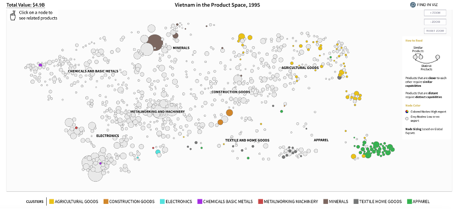
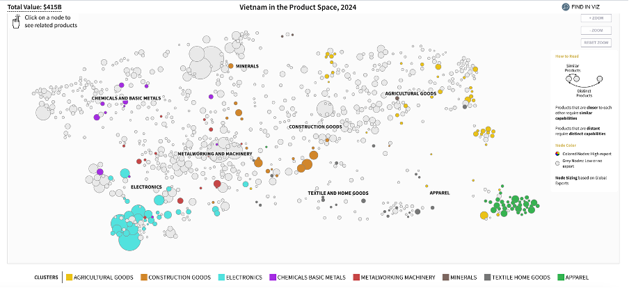

MPA DATA SCIENCE FOR PUBLIC POLICY
The Empirical Puzzle:
Countries rich in natural resources often remain trapped in low-value-added production, growing more slowly than their resource wealth would suggest.
The literature finds weak evidence for the resource curse as a deterministic mechanism. The central question has shifted to identifying the conditions that mediate the relationship between resource wealth and growth.
Resources impede growth only where institutions are "grabber-friendly". Where rule of law is strong, resources accelerate growth.
Resource-rich governments consistently fail to convert extraction rents into human capital, infrastructure, and financial assets. Adjusted net savings are strongly negative.
Resource abundance boosts growth directly but undermines it through macroeconomic volatility, shifting investment toward short-term, low-return projects.
Point-source resources (oil, diamonds) concentrate rents among elites. Diffuse resources (agriculture, forestry) spread benefits more broadly.
Applying a dual, quantitative approach coupled with rich, policy-relevant case studies
Panel OLS models that test Venables' (2016) investment theory empirically, using an interaction strategy inspired by Mehlum et al. (2006).
Application of unsupervised techniques (PCA and K-Means clustering) to group countries by resource extraction profile. While supervised models (LASSO, Ridge, Elastic Net, and Random Forest) take a theory-agnostic approach to surface important predictors.
The three country case studies of the Republic of Congo, Azerbaijan, and Chile build on the empirical findings, identify country-specific challenges, and present policy recommendations.
Across both our econometric and ML models, three structural variables consistently emerge as the strongest predictors of sustained diversification and development of value-added industries.
Domestic Credit to Private Sector
Poor access to finance could result in fewer profitable projects taking off
Access to Electricity
The backbone of industrial diversification and manufacturing capacity.
Education & Skills Index
To learn, upskill, and innovate is vital to capturing a larger share of the value chain
The ECI is a measure developed by the Harvard Growth Lab to capture the degree of "know-how" accumulated by a country. It helps track the transition from low complexity activities (e.g., subsistence farming, oil extraction) towards high complexity activities (electronics, machinery, and chemicals).
How it works: Based on trade data to calculate two key measures:


A panel of 54 resource-rich developing economies over 1995 to 2019, covering 48 variables across nine thematic groups (see Annex 1). Thirteen countries were excluded for insufficient coverage (Annex 2). Missing values were filled by linear interpolation (capped at three years) and K-Nearest Neighbours imputation.
Key patterns: Resource-rich countries show lower mean ECI than the full sample. The strongest positive correlations with ECI are domestic credit, the human capital index, and life expectancy; the strongest negative are political corruption and agricultural share of GDP.
We used PCA to compress 21 resource production variables into two dimensions, then K-means clustering (K=5) to group countries by extraction profile. This allows comparison against structural peers.
where \(\mathbf{X}_{it}\) = Political Stability, Rule of Law, Trade Openness
Human Capital (HCI) is positive and significant across all specifications, indicating HCI contributes to complexity growth beyond existing trajectory.
Gross Fixed Capital Formation is positive and significant.
Production Value is negative but not significant, consistent with the conditional curse view.
Institutional controls lose significance once lagged ECI is included.
None of the four interaction terms are significant, however 3 out of 4 carry a positive sign.
The association between human capital and complexity is stronger in countries with more intensive resource production, consistent with Venables (2016): returns are greatest where the gap between current and optimal capital stocks is widest.
Econometric models select variables guided by theory. This ensures interpretability but risks omitting predictors that matter empirically yet lack a clear theoretical rationale.
With 48 available variables across nine thematic groups, a theory-driven specification can only test a small subset. Structural factors such as financial depth or electricity access may be excluded simply because they fall outside the theoretical framework.
Machine Learning: all available variables are fed into the models. The ML algorithms themselves identify which predictors carry the most explanatory power.
Regularization techniques (LASSO, Ridge and Elastic Net): they penalise weak coefficients, shrinking them towards zero.
Random Forest: also calculates feature importance, but by capturing non-linear relationships between predictors and ECI.
Robustness check: Where ML and econometrics converge on the same predictors, confidence in those variables is strengthened. Where they diverge, ML highlights factors the theory-driven model may have overlooked.
Domestic credit is the strongest predictor of ECI, a factor absent from the econometrics specification.
Convergence across methods: Human Capital, HCI x Production and Electricity Access rank as top predictors in both approaches.
Based on current levels of our predictors, we project which countries should increase and decrease their ECI.
Ecuador: Expanding renewable energy infrastructure, diversifying beyond oil via trade agreements.
Mongolia: Heavy investment in education and financial infrastructure alongside mining-linked industrialisation.
Equatorial Guinea: Projected to diversify from a very low complexity base.
Saudi Arabia: Projected decline despite Vision 2030, suggesting oil-dominant economies struggle to diversify even with favourable policies.
Libya: Hydrocarbons account for 95%+ of exports; political fragmentation blocks structural reform.
Zimbabwe: Governance and macroeconomic instability undermine preconditions for complexity gains.
Each case illustrates a different configuration of constraints. The binding bottleneck shifts as institutional and economic conditions improve.
| Metric | Republic of Congo | Azerbaijan | Chile |
|---|---|---|---|
| Resource | Oil (80% exports) | Oil & Gas (90% exports) | Copper & Lithium (57% exports) |
| ECI Rank | 124th / 130 | 95th / 130 | 70th / 130 |
| Binding Constraint | All three pillars fail | Dutch Disease + governance | Human capital quality + R&D |
Oil concentration: 40% of GDP, 80% of exports, 60% of government revenues
Infrastructure deficit: National electrification at 50%; only 13% of roads are paved. State operate rail system below capacity
Human Capital gap: Only 60% of children completing primary school go to secondary; the country has around 23,000 teachers against an estimated need of 48,000
Informal economy: 75% of workers are in informal employment; 94% of active firms are informal, cutting them off from formal credit and upskilling
Financial exclusion: 8.5% of firms use banks to finance investment. Only 18% of adults hold a formal bank account.
Education investment: Delink from oil revenue cycles through a dedicated fund mechanism within the CEMAC framework; shift focus from broad-based low-capacity schooling to continuous student progression and quality.
Open the electricity sector to private participation: The 2003 Electricity Code already provides the institutional framework, but political will to enforce it is needed
Strengthen oil revenue transparency: Implement independent verification systems and production reporting
Oil concentration: Over 45% of "non-oil" manufacturing is petroleum-related.
Infrastructure spending: Concentrated heavily on pipelines. SOFAZ spending at times exceeding the fund’s own investment returns.
Rent capture vulnerability: Politically connected contracts, opaque procurement processes, and SOFAZ's lack of independence from presidential orders enable rent capture.
Lack of transparency: Azerbaijan’s State Statistical Committee does not publish a Gini coefficient.
Financial instability: NPLs reached 21% after the 2015-2016 banking crisis.
Mitigate rent capture: Establish independent mechanisms and oversight bodies for sovereign wealth fund governance
Invest in human capital and productive diversification: Prioritise sectors closely related to the existing export basket, such as petrochemicals and renewable energy engineering.
Create independent institutions for data transparency: Independent national statistics and consistently publish non-oil deficit projections and SOFAZ sustainability assessments.
Chile has the strongest institutions in Latin America, yet its ECI has declined since the mid-2000s.
Product space: Exports cluster in the "periphery" of the product space.
Downstream processing: 54% of copper exports go to China for downstream processing.
R&D spending: 0.34% of GDP (one-sixth of OECD average).
Education gap: PISA maths scores 60 points below OECD average.
Productivity: Worker productivity 50% below OECD average.
Direct lithium revenues toward education quality and applied research having a defined share of rents for technical training institutes and applied research, following Norway's SINTEF model.
Build the domestic mining supply chain through procurement preferences for domestic suppliers and dedicated credit lines with risk-sharing facilities.
Invest in logistics infrastructure along the northern mining corridor, port expansion, rail gauge standardisation, and energy connections to support proposed lithium processing facilities and reduce freight costs.
The most effective pathway is not to abandon resource dependence but to systematically convert resource rents into the structural foundations for long-term productive diversification.
Domestic credit to the private sector emerged as the single strongest ML predictor. Monitor it as a filter for diversification capacity.
Unreliable energy supply suppresses private investment. Electricity access is a consistent predictor of complexity across ML models.
Returns to education are highest where resource extraction is most intensive. Investment must be counter-cyclical and structurally insulated from commodity prices.
For sovereign credit assessment: The constraints on industrial upgrading shift as institutional and economic conditions improve. In low-income resource economies (Congo), all three pillars are binding simultaneously. In middle-income settings (Azerbaijan), Dutch Disease and governance dominate. In upper-middle-income settings (Chile), human capital quality and R&D become the bottleneck. No single policy lever is sufficient across all settings.
We are open your questions or comments.
The panel draws on six primary sources. The World Bank WDI supplies 26 variables covering resource rents, sectoral GDP composition, savings, infrastructure, financial depth, and demographics. The IMF WEO and Investment and Capital Stock datasets provide GDP per capita (PPP), fiscal balances, government revenue, and gross fixed capital formation. Governance indicators come from V-Dem; human capital and capital stock from the Penn World Table 11.0; and the landlocked indicator from CEPII GeoDist. Natural resource production quantities and reserves are compiled from the Energy Institute, Our World in Data, and USGS Data Series 140, converted to dollar values using a consolidated price file covering 19 minerals plus oil, coal, and natural gas. For the Chile case study, facility-level data from Sernageomin, COCHILCO, and customs records produce a directed network of approximately 460 facilities and 1,900 edges across 17 commodity groups.
Excluded countries: 13 countries were dropped from the sample due to insufficient data coverage, including North Korea, Cuba, South Sudan, Turkmenistan, Syria, and others with extensive missing economic or governance variables. The full list is in the report appendix (Table B.1).
Imputation: Missing values are filled in two passes. First, linear interpolation estimates gaps between observed values within each country's time series, capped at three years beyond the nearest observation. Second, remaining gaps (where a country has no observed value at all for a variable) are filled using K-Nearest Neighbours imputation (k=5, distance-weighted), which draws on the five most similar country-year observations. Median prediction error across all variables is 5.24%, though volatile series such as inflation (31.1%) and mineral rents (44.4%) carry higher uncertainty. Twenty-five of 54 countries have more than 10% of their data cells filled by KNN.
PCA is a dimensionality reduction technique that transforms a set of potentially correlated variables into a smaller set of uncorrelated variables called principal components (PCs). Each PC is a linear combination of the original variables, constructed to capture the maximum variance remaining in the data (Jolliffe, 2002).
The procedure follows four steps:
We apply PCA to 21 resource production variables. The first two components account for 69.5% of total variance: PC1 (51.8%) is driven by oil and natural gas; PC2 (17.7%) captures mining activity, particularly copper, gold, and coal. Most smaller minerals load weakly on both components.
K-means is an unsupervised algorithm that partitions n observations into k clusters by minimising within-cluster variance, defined as the sum of squared Euclidean distances between each observation and its cluster centroid (MacQueen, 1967).
The algorithm iterates three steps until convergence:
We apply K-means (k=5) to the first two principal components, using the 1995 cross-section of 54 countries. The silhouette score analysis restricts the optimal range to k=3 through k=6.
Agreement with the baseline is measured by the Adjusted Rand Index (ARI), which compares two partitions on a scale from 0 (random) to 1 (identical), corrected for chance.
| Specification | Change from Baseline | ARI | Key Observations |
|---|---|---|---|
| k = 3 | Fewer clusters | - | Petrostates and Oil Exporters merge, losing the distinction between Gulf producers and lower-income oil economies. |
| k = 4 | Fewer clusters | - | Mining Exporters and Diversified Producers collapse into one group, mixing mineral-dominant and mixed portfolios. |
| k = 6 | More clusters | - | Forestry Intensive splits further but the extra cluster contains only 2-3 countries with no clear interpretive profile. |
| A: Merged minerals | 4 features instead of 21 | 0.70 | Hydrocarbon clusters stable. Divergence in mineral-dependent economies where copper/gold distinction is lost. |
| B: Three PCs | 3 components instead of 2 | 0.81 | Highest ARI. Third component (11.4% variance) adds limited clustering power. |
| C: 2019 data | End-of-panel production | 0.67 | Azerbaijan and Iraq move to Petrostates; Kazakhstan and Russia shift to Mining Exporters; Ghana and Vietnam leave Forestry Intensive. |
Country-level stability: 14 countries (27%) receive the same label across all four specifications, drawn almost entirely from Forestry Intensive plus the UAE. The least stable are mixed hydrocarbon-mineral economies (Bolivia, Indonesia, Kazakhstan, Russia, Iran), whose resource composition is not well summarised by a single cluster. The clustering is used as a descriptive device only and is not included as a predictor in the econometric or ML specifications.
Acemoglu, D., Johnson, S. and Robinson, J.A. (2001) 'The colonial origins of comparative development: an empirical investigation', American Economic Review, 91(5), pp. 1369–1401.
Acemoglu, D., Johnson, S. and Robinson, J.A. (2003) 'An African success story: Botswana', in Rodrik, D. (ed.) In Search of Prosperity: Analytic Narratives on Economic Growth. Princeton: Princeton University Press, pp. 80–119.
Acemoglu, D., Naidu, S., Restrepo, P. and Robinson, J.A. (2019) 'Democracy does cause growth', Journal of Political Economy, 127(1), pp. 47–100.
Acemoglu, D. and Robinson, J.A. (2012) Why Nations Fail: The Origins of Power, Prosperity and Poverty. New York: Crown Publishers.
Aghion, P., Angeletos, G.-M., Banerjee, A. and Manova, K. (2010) 'Volatility and growth: credit constraints and the composition of investment', Journal of Monetary Economics, 57(3), pp. 246–265.
Alves, A.C. (2013) 'Chinese economic statecraft: a comparative study of China's oil-backed loans in Angola and Brazil', Journal of Current Chinese Affairs, 42(1), pp. 99–130.
Asian Development Bank (2021) Project administration manual: Republic of Azerbaijan: Railway Sector Development Program (Project No. 48386-004). Manila: ADB. Available at: https://www.adb.org/sites/default/files/project-documents/48386/48386-004-pam-en_1.pdf
AZERTAC (2018) 'New fiscal rule signed into law', Azerbaijan State News Agency, 24 August. Available at: https://azertag.az/en/xeber/New_fiscal_rule_signed_in_to_law-1190031
Banco Central de Chile (2024) Deuda externa de Chile, 2023. Santiago: Banco Central de Chile. Available at: https://www.bcentral.cl
Belloni, A., Chernozhukov, V. and Hansen, C. (2014) 'High-dimensional methods and inference on structural and treatment effects', Journal of Economic Perspectives, 28(2), pp. 29–50.
Bertelsmann Stiftung (2024a) BTI 2024 Country Report — Azerbaijan. Gütersloh: Bertelsmann Stiftung. Available at: https://bti-project.org/en/reports/country-report/AZE
Bertelsmann Stiftung (2024b) BTI 2024 Country Report — Congo, Rep. Gütersloh: Bertelsmann Stiftung.
Bhattacharyya, S. and Collier, P. (2014) 'Public capital in resource rich economies: is there a curse?', Oxford Economic Papers, 66(1), pp. 1–24. doi:10.1093/oep/gpt007.
Birbayeva, A. (2026) 'Azerbaijan boosts gas exports to Europe by 56% as Southern Gas Corridor expands', The Astana Times, 4 March. Available at: https://astanatimes.com/2026/03/azerbaijan-boosts-gas-exports-to-europe-by-56-as-southern-corridor-expands/
Boschini, A.D., Pettersson, J. and Roine, J. (2007) 'Resource curse or not: a question of appropriability', Scandinavian Journal of Economics, 109(3), pp. 593–617.
BP (2024) BP Statistical Review of World Energy. London: BP. Available at: https://www.bp.com/en/global/corporate/energy-economics/statistical-review-of-world-energy.html
Breiman, L. (2001) 'Random forests', Machine Learning, 45(1), pp. 5–32.
Broken Chalk (2020) 'Educational challenges in Congo'. Available at: https://brokenchalk.org/educational-challenges-in-congo/
Burden, R.L. and Faires, J.D. (2011) Numerical Analysis. 9th edn. Boston: Brooks/Cole.
Center for Economic and Social Development (CESD) (2016) The Economy of Azerbaijan in 2015: Independent View. Baku: CESD. Available at: https://cesd.az/new/wp-content/uploads/2016/01/CESD_Research_Paper_Azerbaijan_Economy_2015.pdf
CIA (2024). 'Congo, Republic of the.' The World Factbook. Washington, DC: Central Intelligence Agency.
COCHILCO (2024) Anuario de estadísticas del cobre y otros minerales. Santiago: Comisión Chilena del Cobre. Available at: https://www.cochilco.cl/web/anuario-de-estadisticas-del-cobre-y-otros-minerales/
Collier, P. and Hoeffler, A. (2004) 'Greed and grievance in civil war', Oxford Economic Papers, 56(4), pp. 563–595.
Coppedge, M., Gerring, J., Knutsen, C.H., Lindberg, S.I., Skaaning, S.-E., Teorell, J. and Altman, D. (2024) V Dem Dataset v12. Varieties of Democracy (V Dem) Project. Available at: https://www.v-dem.net
Corden, W.M. and Neary, J.P. (1982) 'Booming sector and de-industrialisation in a small open economy', Economic Journal, 92(368), pp. 825–848.
DataReportal (2026). Digital 2026: The Republic of the Congo. Kepios. Available at: https://datareportal.com/reports/digital-2026-republic-of-the-congo
EIA (2024). 'Congo Brazzaville Becomes a Liquefied Natural Gas-Exporting Country.' Today in Energy, 29 May. Washington, DC: U.S. Energy Information Administration. Available at: https://www.eia.gov/todayinenergy/detail.php?id=62143
Einav, L. and Levin, J.D. (2013) The data revolution and economic analysis. NBER Working Paper No. 19035. Cambridge, MA: National Bureau of Economic Research. Available at: https://www.nber.org/papers/w19035
Emerging Europe (2024) 'Economy in focus: Azerbaijan', Emerging Europe, 1 November. Available at: https://emerging-europe.com/analysis/economy-in-focus-azerbaijan-2/
Energy Institute (2024) Statistical Review of World Energy. London: Energy Institute. Available at: https://www.energyinst.org/statistical-review/resources-and-data-downloads
European Bank for Reconstruction and Development (EBRD) (2024) Transition Report 2024–25: Navigating Industrial Policy — Azerbaijan Country Assessment. London: EBRD. Available at: https://www.ebrd.com/content/dam/ebrd_dxp/assets/pdfs/office-of-the-chief-economist/transition-report-archive/transition-report-2024/country-assessments-2023-24/eastern-europe-and-the-caucasus/Transition-Report-2024-25-Azerbaijan.pdf
FAO and EFI (2018) Making forest concessions in the tropics work to achieve the 2030 Agenda: voluntary guidelines. FAO Forestry Paper No. 180. Rome: FAO. doi:10.4060/I9487EN.
Feenstra, R.C., Inklaar, R. and Timmer, M.P. (2015) 'The next generation of the Penn World Table', American Economic Review, 105(10), pp. 3150–3182.
Franke, A., Gawrich, A. and Alakbarov, G. (2009) 'Kazakhstan and Azerbaijan as post-Soviet rentier states: resource incomes and autocracy as a double "curse" in post-Soviet regimes', Europe-Asia Studies, 61(1), pp. 109–140. doi:10.1080/09668130802532977.
Freedom House (2024) Nations in Transit 2024: Azerbaijan Country Report. Washington, DC: Freedom House. Available at: https://freedomhouse.org/country/azerbaijan/nations-transit/2024
Fuentes, R. and Mies, V. (2005) Una mirada al desarrollo económico de Chile desde una perspectiva internacional. Working Paper No. 109. Santiago: Central Bank of Chile.
Gelb, A. (2010) 'Economic diversification in resource rich countries', paper presented at the High-Level Seminar on Natural Resources, Finance, and Development, Central Bank of Algeria and IMF Institute, Algiers, 4–5 November. Available at: https://www.imf.org/external/np/seminars/eng/2010/afrfin/pdf/gelb2.pdf
Guliyev, F. (2013) 'Oil and regime stability in Azerbaijan', Demokratizatsiya: The Journal of Post-Soviet Democratization, 21(1), pp. 113–147.
Gylfason, T. (2001) 'Natural resources, education, and economic development', European Economic Review, 45(4–6), pp. 847–859.
Hair, J.F., Black, W.C., Babin, B.J. and Anderson, R.E. (2019) Multivariate Data Analysis. 8th edn. Andover: Cengage.
Hampel-Milagrosa, A., Haydarov, A., Anderson, K., Sibal, J. and Ginting, E. (eds.) (2020) Azerbaijan: Moving Toward More Diversified, Resilient, and Inclusive Development. Country Diagnostic Studies. Manila: Asian Development Bank. doi:10.22617/TCS200212.
Hasanov, F. (2013) 'Dutch disease and the Azerbaijan economy', Communist and Post-Communist Studies, 46(4), pp. 463–480. doi:10.1016/j.postcomstud.2013.09.001.
Hausmann, R., Hidalgo, C.A., Bustos, S., Coscia, M., Chung, S., Jimenez, J., Simoes, A. and Yildirim, M.A. (2014) The Atlas of Economic Complexity. Cambridge, MA: Center for International Development, Harvard University. Available at: https://atlas.cid.harvard.edu/
Hausmann, R., Hwang, J. and Rodrik, D. (2007) 'What you export matters', Journal of Economic Growth, 12(1), pp. 1–25.
Hausmann, R., Rodrik, D. and Velasco, A. (2005) Growth diagnostics. Growth Lab Working Paper. Cambridge, MA: John F. Kennedy School of Government, Harvard University. Available at: https://growthlab.hks.harvard.edu/publication/growth-diagnostics/
Harvard Growth Lab (2025a). The Atlas of Economic Complexity. Cambridge, MA: Center for International Development, Harvard University. Available at: https://atlas.cid.harvard.edu/countries/50/export-basket
Harvard Growth Lab (2025b) The Atlas of Economic Complexity: Chile country profile. Cambridge, MA: Harvard University. Available at: https://atlas.hks.harvard.edu/countries/152/product-table
Havránek, T., Horváth, R. and Zeynalov, A. (2016) 'Natural resources and economic growth: a meta-analysis', World Development, 88, pp. 134–151.
Hidalgo, C.A. and Hausmann, R. (2009) 'The building blocks of economic complexity', Proceedings of the National Academy of Sciences, 106(26), pp. 10570–10575. doi:10.1073/pnas.0900943106.
Hidalgo, C.A., Klinger, B., Barabási, A.-L. and Hausmann, R. (2007) 'The product space conditions the development of nations', Science, 317(5837), pp. 482–487. doi:10.1126/science.1144581.
Hoerl, A.E. and Kennard, R.W. (1970) 'Ridge regression: biased estimation for nonorthogonal problems', Technometrics, 12(1), pp. 55–67. doi:10.1080/00401706.1970.10488634.
International Energy Agency (IEA) (2023) Azerbaijan Energy Profile. Paris: IEA. Available at: https://www.iea.org/countries/azerbaijan
International Monetary Fund (IMF) (2016) Republic of Azerbaijan: 2016 Article IV Consultation — Press Release; Staff Report; and Informational Annex. IMF Staff Country Report No. 16/296. Washington, DC: IMF. doi:10.5089/9781475536485.002.
International Monetary Fund (IMF) (2023a) Azerbaijan: Article IV Consultation Staff Report. Washington, DC: IMF. Available at: https://www.imf.org/en/Publications/CR/Issues/2023/06/09/Azerbaijan-2023-Article-IV-Consultation
International Monetary Fund (IMF) (2023b) Republic of Congo: Poverty Reduction and Growth Strategy. IMF Country Report No. 23/90. Washington, DC: IMF.
International Monetary Fund (IMF) (2024a) Republic of Congo: Selected Issues. IMF Country Report No. 24/252. Washington, DC: IMF.
International Monetary Fund (IMF) (2024c) 'Chile: Staff Concluding Statement of the 2024 Article IV Mission', Washington, DC: IMF.
International Monetary Fund (IMF) (2025a) World Economic Outlook Database. Washington, DC: IMF.
International Monetary Fund (IMF) (2025b) Republic of Azerbaijan: 2025 Article IV Consultation — Press Release; Staff Report; and Statement by the Executive Director for the Republic of Azerbaijan. IMF Country Report No. 25/98. Washington, DC: IMF. Available at: https://www.imf.org/en/News/Articles/2025/04/22/pr-25118-azerbaijan-imf-concludes-2025-article-iv-consultation
International Monetary Fund (IMF) (2025c) Republic of Congo: Assessment and Reform of Petroleum Product Subsidies. Washington, DC: IMF.
International Monetary Fund (IMF) (2025d) Republic of Congo: Sixth Review under the Three-Year Arrangement under the Extended Credit Facility, Request for Waivers of Non-Observance of Performance Criteria, and Financing Assurances Review. IMF Country Report No. 25/75. Washington, DC: IMF.
International Monetary Fund (IMF) (2025e) 'Chile: 2024 Article IV Consultation — Staff Report', IMF Country Report No. 25/37. Washington, DC: IMF. doi:10.5089/9798400297366.002.
International Monetary Fund (IMF) (2026) 'IMF staff completes 2026 Article IV mission to Azerbaijan', IMF Press Release, 19 February. Available at: https://www.imf.org/en/news/articles/2026/02/19/pr-26056-azerbaijan-imf-staff-completes-2026-article-iv-mission
International Trade Administration (ITA) (2025) 'Chile — Mining', Country Commercial Guide. Washington, DC: U.S. Department of Commerce. Available at: https://www.trade.gov/country-commercial-guides/chile-mining
Isham, J., Woolcock, M., Pritchett, L. and Busby, G. (2005) 'The varieties of resource experience: natural resource export structures and the political economy of economic growth', World Bank Economic Review, 19(2), pp. 141–174.
Jolliffe, I.T. (2002) Principal Component Analysis. 2nd edn. New York: Springer. doi:10.1007/b98835.
Kelly, T.D. and Matos, G.R. (comps.) (2014) Historical statistics for mineral and material commodities in the United States (2016 version). U.S. Geological Survey Data Series 140. Reston, VA: USGS.
Kumhof, M. and Laxton, D. (2009) 'Chile's structural fiscal surplus rule: a model-based evaluation', IMF Working Paper WP/09/88. Washington, DC: IMF.
Kutner, M.H., Nachtsheim, C.J., Neter, J. and Li, W. (2004) Applied Linear Statistical Models. 5th edn. New York: McGraw-Hill/Irwin.
Lashitew, A.A., Ross, M.L. and Werker, E. (2020) 'What drives successful economic diversification in resource-rich countries?', World Bank Research Observer, 36(2), pp. 164–196.
Lederman, D. and Maloney, W.F. (2007) Natural Resources: Neither Curse nor Destiny. Stanford: Stanford University Press and World Bank.
MacQueen, J. (1967) 'Some methods for classification and analysis of multivariate observations', in Proceedings of the Fifth Berkeley Symposium on Mathematical Statistics and Probability, Vol. 1. Berkeley: University of California Press, pp. 281–297.
Manzano, O. and Rigobon, R. (2001) Resource curse or debt overhang? NBER Working Paper No. 8390. Cambridge, MA: National Bureau of Economic Research.
Marcel, M. (2011) 'The structural balance rule in Chile: ten years, ten lessons', IDB Discussion Paper No. IDB-DP-184. Washington, DC: Inter-American Development Bank.
Mayer, T. and Zignago, S. (2011) Notes on CEPII's Distances Measures: The GeoDist Database. CEPII Working Paper No. 2011-25. Available at: https://www.cepii.fr/PDF_PUB/wp/2011/wp2011-25.pdf
Mehlum, H., Moene, K. and Torvik, R. (2006) 'Institutions and the resource curse', Economic Journal, 116(508), pp. 1–20.
Ministerio de Hacienda (2025) Monthly Executive Report: Economic and Social Stabilization Fund, December 2024. Santiago: Ministerio de Hacienda. Available at: https://www.hacienda.cl/english/work-areas/international-finance/sovereign-wealth-funds/economic-and-social-stabilization-fund
Mlachila, M. and Ouedraogo, R. (2020) 'Financial development curse in resource-rich countries: the role of commodity price shocks', Quarterly Review of Economics and Finance, 76, pp. 84–96.
Moody's Analytics (2025) 'Azerbaijan: Economic Indicators'. Available at: https://www.economy.com/azerbaijan
Norskpetroleum.no (2024) 'Petroleum related research and development'. Oslo: Norwegian Ministry of Energy. Available at: https://www.norskpetroleum.no
OECD (2017a) Making Decentralisation Work in Chile: Towards Stronger Municipalities. OECD Multi-level Governance Studies. Paris: OECD Publishing. doi:10.1787/9789264279049-en.
OECD (2017b) Gaps and Governance Standards of Public Infrastructure in Chile. OECD Reviews of Regulatory Reform. Paris: OECD Publishing.
OECD (2022) OECD Economic Surveys: Chile 2022. Paris: OECD Publishing. doi:10.1787/311ec37e-en.
OECD (2024a) Education at a Glance 2024: OECD Indicators. Paris: OECD Publishing. doi:10.1787/c00cad36-en.
OECD (2024b) 'Chile', in Job Creation and Local Economic Development 2024. Paris: OECD Publishing. Available at: https://www.oecd.org/content/dam/oecd/en/publications/reports/2024/11/job-creation-and-local-economic-development-2024-country-notes_65d489c5/chile_cb89a789/3f929818-en.pdf
OECD (2025) OECD Economic Surveys: Chile 2025. Paris: OECD Publishing. doi:10.1787/efad96ce-en.
Oshiro, T.M., Perez, P.S. and Baranauskas, J.A. (2012) 'How many trees in a random forest?', in Perner, P. (ed.) Machine Learning and Data Mining in Pattern Recognition. Berlin: Springer, pp. 154–168.
Piketty, M.-G., Singer, B. and Karsenty, A. (2008) 'Regulating industrial forest concessions in Central Africa and South America', Forest Ecology and Management, 256(7), pp. 1498–1508. doi:10.1016/j.foreco.2008.07.001.
Poelhekke, S. and van der Ploeg, F. (2010) Do natural resources attract FDI? Evidence from non-stationary sector-level data. DNB Working Paper No. 266. Amsterdam: De Nederlandsche Bank.
Ritchie, H. and Rosado, P. (2024) 'Metals and Minerals', Our World in Data. Available at: https://ourworldindata.org/metals-minerals
Ross, M.L. (2015) 'What have we learned about the resource curse?', Annual Review of Political Science, 18, pp. 239–259.
Ryggvik, H. (2015) 'A short history of the Norwegian oil industry: from protected national champions to internationally competitive multinationals', Business History Review, 89(1), pp. 3–41.
Rzayev, M. (2026) 'Running out of time: Azerbaijan looks to tax hikes to counter shrinking hydrocarbon reserves', OC Media. Available at: https://oc-media.org/running-out-of-time-azerbaijan-looks-to-tax-hikes-to-counter-shrinking-hydrocarbon-reserves/
Sachs, J.D. and Warner, A.M. (1995) Natural resource abundance and economic growth. NBER Working Paper No. 5398. Cambridge, MA: National Bureau of Economic Research.Salinas, G. (2021) 'Chile: a role model of export diversification policies?', IMF Working Paper WP/21/148. Washington, DC: IMF.
Solimano, A. (2009) 'Three decades of neoliberal economics in Chile: achievements, failures, and dilemmas', WIDER Research Paper No. 2009/37. Helsinki: UNU-WIDER.
Solimano, A. and Gómez, D. (2018) 'The copper sector, fiscal rules, and stabilization funds in Chile: scope and limits', in Kaul, A. and Conceição, P. (eds.) Extractive Industries: The Management of Resources as a Driver of Sustainable Development. Oxford: Oxford University Press, pp. 225–249.
Søreide, T. (2007) Forest concessions and corruption. U4 Issue 2007:3. Bergen: Chr. Michelsen Institute.
Thorp, R. (1984) Latin America in the 1930s: The Role of the Periphery in World Crisis. London: Macmillan.
Tibshirani, R. (1996) 'Regression shrinkage and selection via the lasso', Journal of the Royal Statistical Society, Series B (Methodological), 58(1), pp. 267–288. doi:10.1111/j.2517-6161.1996.tb02080.x.
Transparency International (2025) 'CPI 2024 for Eastern Europe and Central Asia: vicious cycle of weak democracy and flourishing corruption', 11 February. Available at: https://www.transparency.org/en/news/cpi-2024-eastern-europe-central-asia--vicious-cycle-weak-democracy-flourishing-corruption
USAID (2017) Power Africa in the Republic of Congo. Washington, DC: United States Agency for International Development. Available at: https://2012-2017.usaid.gov/powerafrica/republic-of-congo
U.S. Geological Survey (USGS) (2024) Mineral Commodity Summaries 2024. Reston, VA: U.S. Geological Survey. doi:10.3133/mcs2024.
Van der Ploeg, F. and Poelhekke, S. (2009) 'Volatility and the natural resource curse', Oxford Economic Papers, 61(4), pp. 727–760.
Van der Ploeg, F. and Venables, A.J. (2011) 'Harnessing windfall revenues: optimal policies for resource-rich developing economies', Economic Journal, 121(551), pp. 1–30.
Venables, A.J. (2016) 'Using natural resources for development: why has it proven so difficult?', Journal of Economic Perspectives, 30(1), pp. 161–184. doi:10.1257/jep.30.1.161.
World Bank (2004) Inequality in Latin America and the Caribbean: Breaking with History? Washington, DC: World Bank.
World Bank (2020a) Doing Business 2020: Comparing Business Regulation in 190 Economies. Washington, DC: World Bank.
World Bank (2020b) Republic of Congo Digital Economy Assessment. Washington, DC: World Bank.
World Bank (2020c) Republic of Congo: Skills Development for Employability Project — Additional Financing. Report No. PAD3640. Washington, DC: World Bank. Available at: https://documents1.worldbank.org/curated/en/422161608519726947/pdf/Republic-of-Congo-Skills-Development-for-Employability-Project-Additional-Financing.pdf
World Bank (2022a) Azerbaijan Human Capital Review. Washington, DC: World Bank. Available at: https://documents1.worldbank.org/curated/en/099082001272341155/pdf/P1735301c30e9a0b1efa3147da1823d147928a86e81a.pdf
World Bank (2022b) The Republic of Azerbaijan: Systematic Country Diagnostic Update. Washington, DC: International Bank for Reconstruction and Development / The World Bank. Available at: https://documents1.worldbank.org/curated/en/279421656601259317/pdf/Azerbaijan-Systematic-Country-Diagnostic-Update.pdf
World Bank (2023a) Republic of Congo: Country Economic Memorandum — Road to Prosperity: Building Foundations for Economic Diversification. Washington, DC: World Bank.
World Bank (2023b) Republic of Congo Economic Update: Reforming Fossil Fuel Subsidies. 10th edn. Washington, DC: World Bank.
World Bank (2023c) Connecting to Compete 2023: Trade Logistics in an Uncertain Global Economy — Logistics Performance Index. Washington, DC: World Bank.
World Bank (2023d) Libya Economic Monitor: A New Time to Choose (Fall 2023). Washington, DC: World Bank. Available at: https://www.worldbank.org/en/country/libya/publication/libya-economic-monitor
World Bank (2024a) 'Azerbaijan overview'. Available at: https://www.worldbank.org/en/country/azerbaijan/overview
World Bank (2024b) 'Strategic investments can drive Ecuador toward resilient, low-emissions development' [Press release], 19 September. Available at: https://www.worldbank.org/en/news/press-release/2024/09/19/las-inversiones-estrat-gicas-pueden-impulsar-a-ecuador-hacia-un-desarrollo-resiliente-y-bajo-en-emisiones
World Bank (2025) Republic of Congo Economic Update (12th edn.): Strengthen the Management of Produced, Human, and Natural Capital to Raise Living Standards in the Republic of the Congo. Washington, DC: World Bank.
World Bank (2025b). Macro Poverty Outlook: Republic of Congo. Washington, DC: World Bank. Available at: https://thedocs.worldbank.org/en/doc/bae48ff2fefc5a869546775b3f010735-0500062021/related/mpo-cog.pdf
World Bank (2026) World Development Indicators. Washington, DC: World Bank. Available at: https://data.worldbank.org/indicator
World Economic Forum (WEF) (2019) The Global Competitiveness Report 2019. Geneva: World Economic Forum.
World Justice Project (2025) Rule of Law Index 2025. Washington, DC: World Justice Project.
Zou, H. and Hastie, T. (2005) 'Regularization and variable selection via the elastic net', Journal of the Royal Statistical Society, Series B, 67(2), pp. 301–320.